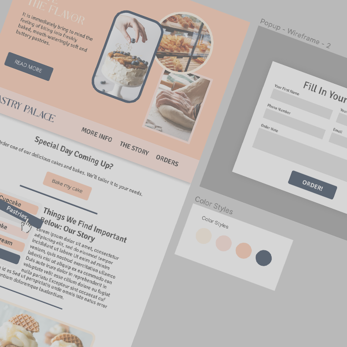
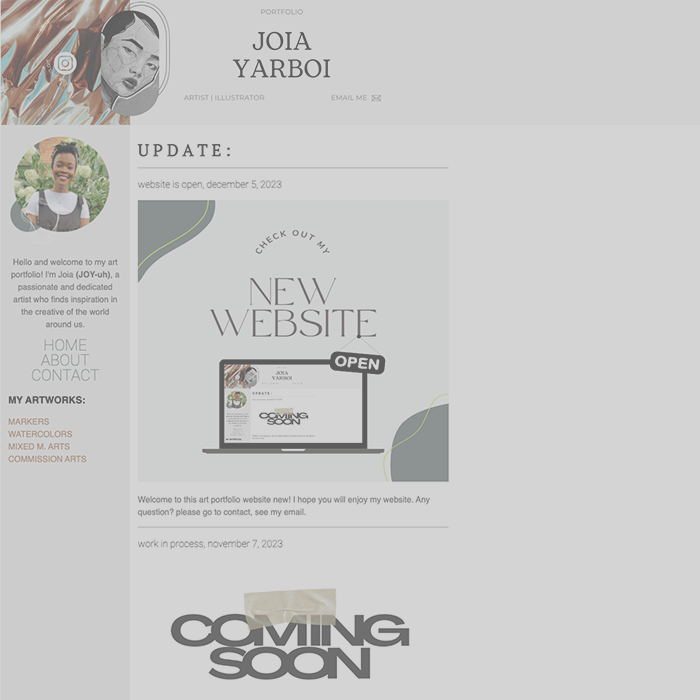
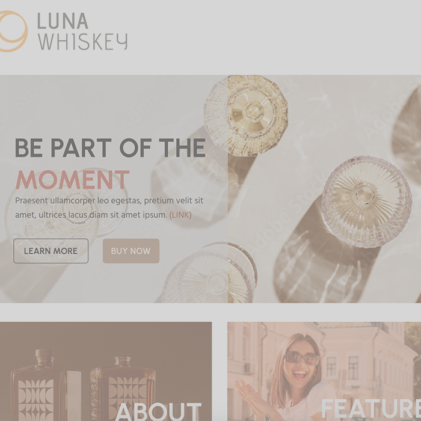

scroll down to find more
works
branding & web
branding & web
branding & web/mobile
luna whiskey.
Period: July-August 2023
Who: Joia Yarboi
about me
how
I started
I’m a web designer, illustrator, artist, and graphic designer based in Chicago. I have many talents. As a deaf individual fluent in sign language, I bring a unique perspective and a remarkable ability to communicate visually. With over 6 years of experience in graphic design and 1+ year in web design, I have honed my talents and demonstrated a strong commitment to excellence. Continuously driven to expand my skill set, I am currently pursuing a major in software development to embark on a new and exciting career path.
This year, I am returning to my studies in pursuit of a new career path after taking a break from my previous profession. Over the past two years, I faced significant health challenges that led to a four-month hospitalization, resulting in a physical disability in addition to being deaf since birth. Despite these setbacks, I have utilized the time spent at home to further develop my skills through self-teaching and relearning coding techniques. This journey has only strengthened my determination to excel in the field and contribute my unique perspective as a deaf and physically disabled individual.
Relevant Coursework:
- Web Development
- User Interface Design
- Database Management
Skills:
- Proficient in graphic design software, including Adobe Photoshop, Illustrator, InDesign, and Figma
- Strong knowledge of web design languages, such as HTML, CSS, and JavaScript.
- Familiarity with web development frameworks, including Bootstrap.
- Solid understanding of user experience (UX) principles.
- Excellent communication and interpersonal skills, including fluency in sign language.
- Detail-oriented and committed to producing high-quality work.
- Self-motivated and eager to learn new technologies and design trends.
contact
Email: joia.yarboi@gmail.com
Any Questions? Feel free to say hello!
And ask me!